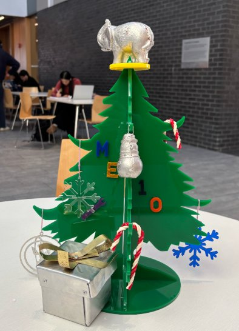
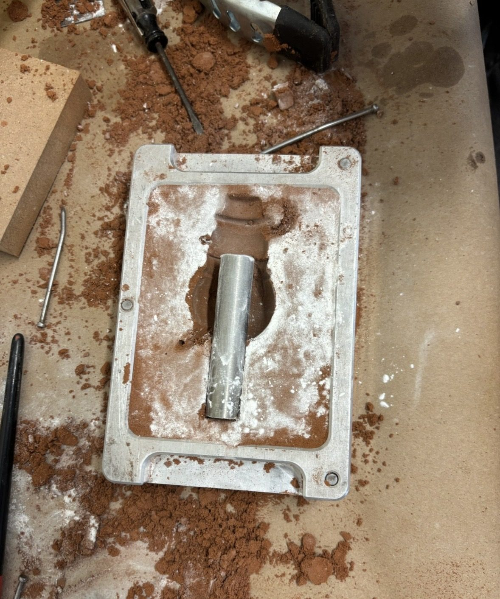
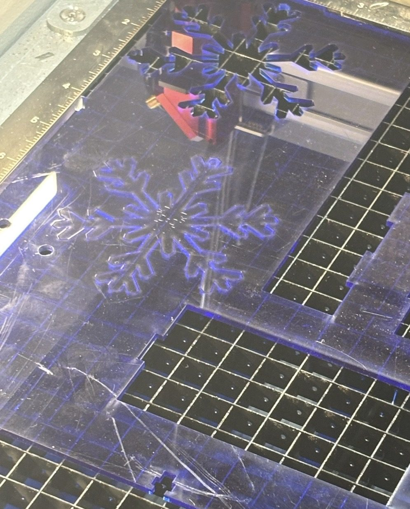
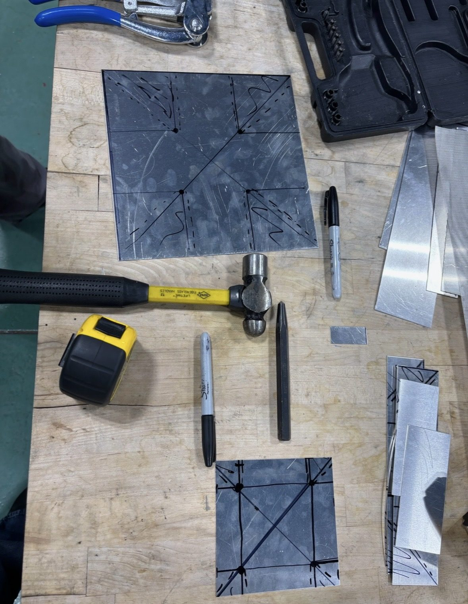
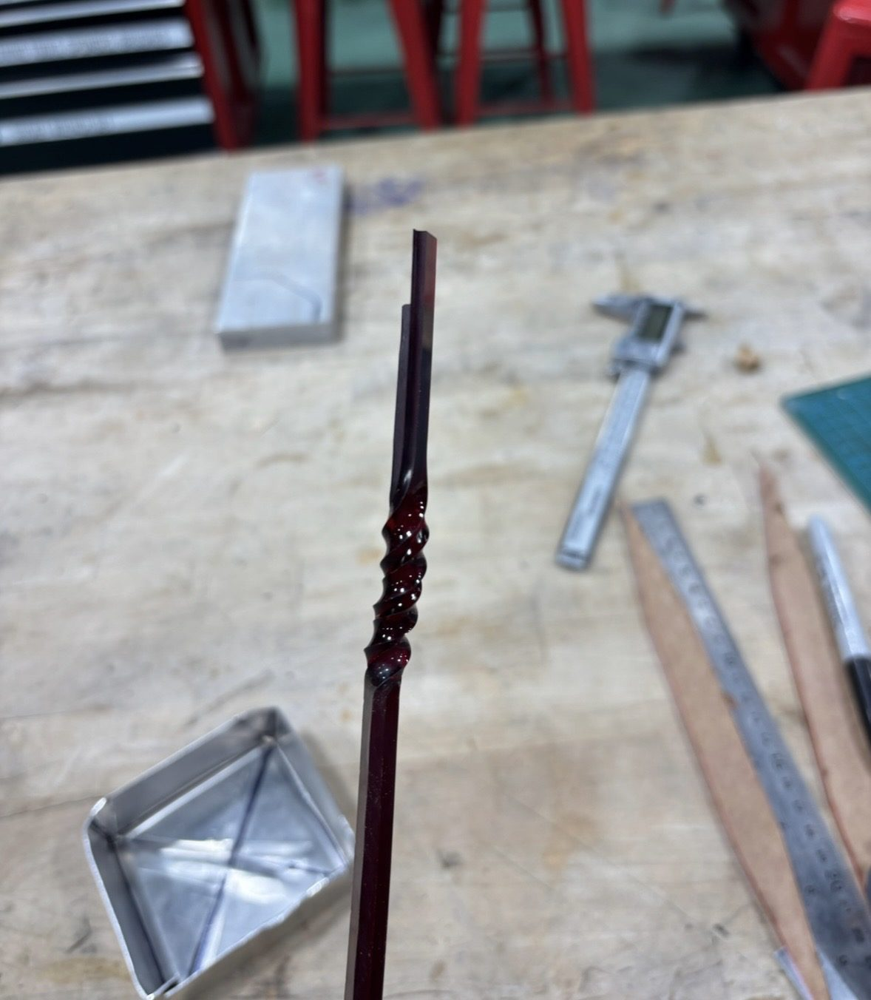
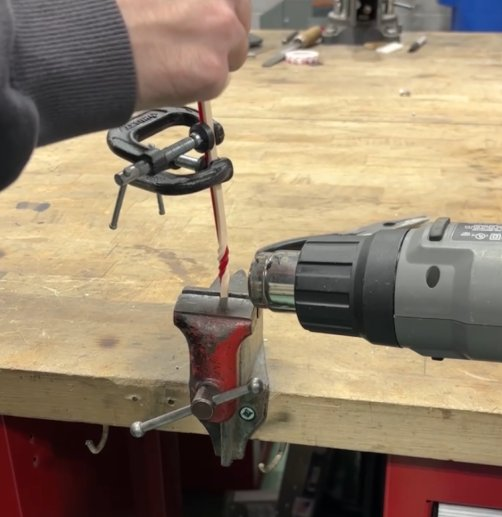
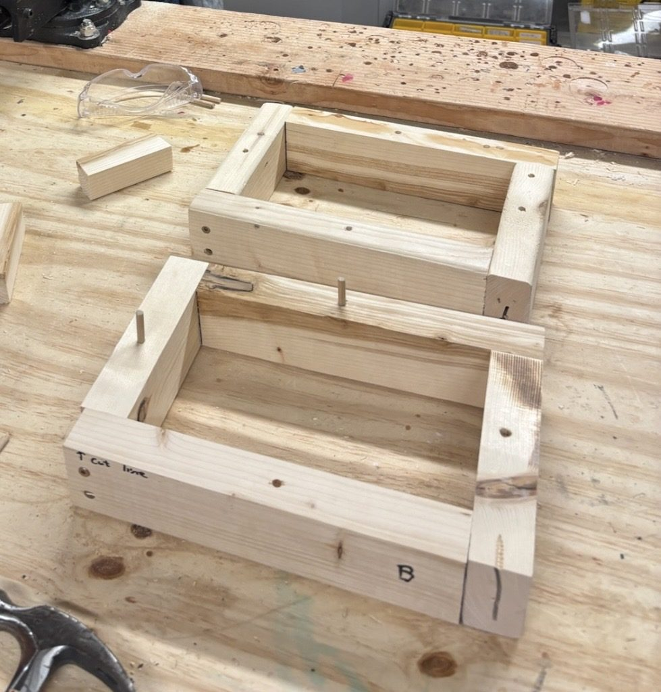
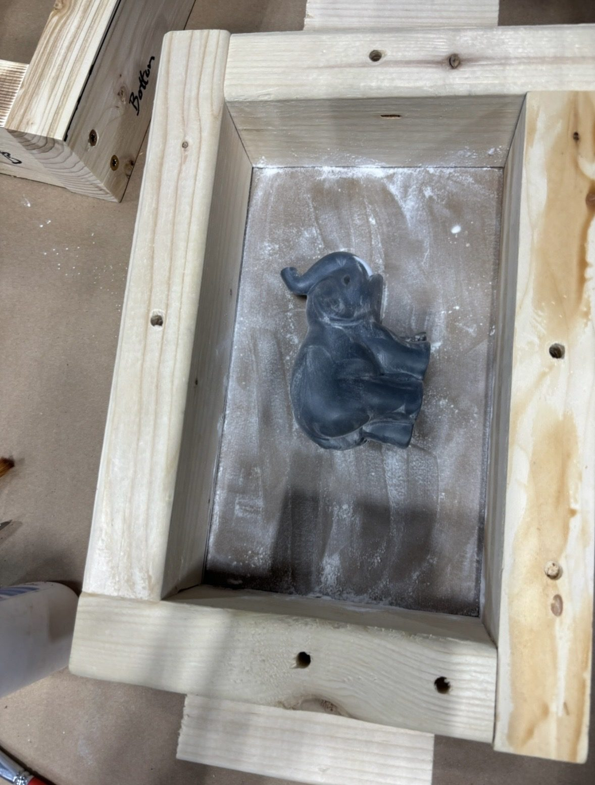
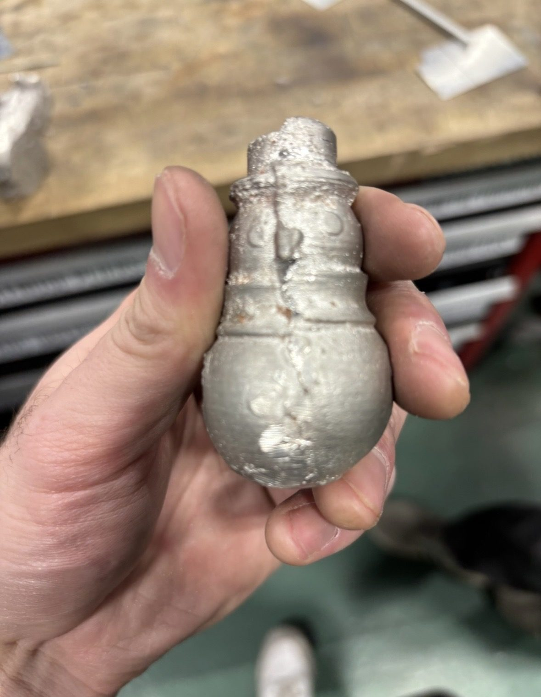

Materials & Manufacturing (Tufts) — Fall 2025 — Team Project (4 members)
A themed holiday tree and ornament collection, where each piece's manufacturing process was deliberately chosen to match its geometry and material needs.
For our Materials & Manufacturing final project, our team of four designed and built a holiday tree and set of ornaments, using the project as an opportunity to explore manufacturing techniques beyond what we'd done in scheduled lab periods. Each team member took ownership of different pieces, applying a different process to each: laser cutting, sheet metal bending, waterjet cutting, thermoforming, and sand casting.
Rather than picking manufacturing techniques arbitrarily, our team matched each part's geometry to the process best suited for it. The snowman is symmetric about a central axis, making it a good candidate for a two-part sand-cast mold split along that centerline. The elephant needed to preserve fine surface detail (ears, wrinkles, texture), so sand casting was again the right fit for capturing that level of detail from a physical pattern. The snowflakes and other flat decorations were laser-cut from clear acrylic, taking advantage of the material's transparency and the process's precision for flat, detailed shapes. The present box and bow used sheet metal bending, letting us combine different metal colors for contrast. The candy canes took advantage of acrylic's behavior at its glass transition temperature, letting us heat and twist strips into a shape no other process on this list could easily produce. Thinking through material and process fit this way, rather than defaulting to whatever we'd used most in class, was the core design driver behind the whole project.
I designed and manufactured the main tree structure: I traced the tree outline in SolidWorks and built hooks directly into the profile for hanging ornaments, made of two flat interlocking acrylic pieces that form a freestanding cross-shaped base, plus a base and top platform sized to hold an elephant tree-topper.
My more involved piece was the sand-cast pewter snowman. I designed it in CAD with a hollow interior, 3D-printed the pattern, and cast it using a steel core rod to form the internal cavity and keep the final piece lighter.

Our teammates contributed additional ornaments using their own choice of process:
Laser-cut acrylic snowflakes and decorations (including our class name and a wrench).

A sheet-metal bent present box and bow.

A waterjet-cut ornament with rotating parts that formed a 3D shape when assembled — this one didn't turn out perfectly, but the mechanism concept worked.
Acrylic candy canes, made by heating strips of red and white acrylic past their glass transition temperature and twisting them together.


I also sand-cast a Tufts Jumbo elephant, building a custom mold box for it since existing shop boxes didn't have enough clearance for the pattern.


The Jumbo elephant was cast from a squishy plush pattern, which created its own problems: existing sand-casting boxes in the shop didn't have enough clearance for the plush, so we built our own, about 6 inches tall. The plush was also prone to compressing rather than holding its shape while we packed sand around it, so the side of the mold where sand was pressed directly against the elephant captured good detail, but the opposite side, packed by hammering sand down onto it, compressed the plush and lost detail instead of imprinting it. That's why the back side of our final casting is less detailed than the front. We also had to carefully align the elephant along the mold's parting line, since we wanted to preserve the plush and remove it intact rather than destroying it to release the casting.
The snowman had its own casting challenge: a small burr left over from cutting the steel core rod on the band saw caught inside the casting after the pewter solidified, so the core wouldn't come out even after twisting and rotating it. On a second attempt, we chamfered the edge of the rod smooth before casting, then used a heat gun aimed mostly at the steel rod itself. The idea was that heat would conduct down through the rod to its embedded middle section and locally melt just enough of the surrounding pewter to release it cleanly, without heating the rest of the casting. We also hadn't originally planned a way to hang the finished snowman; after a few failed attempts, we got a tip to locally melt the pewter with a soldering iron and insert a brass hook, which worked well.

The final piece was a fully decorated, freestanding acrylic tree showcasing six different manufacturing techniques across its ornaments.